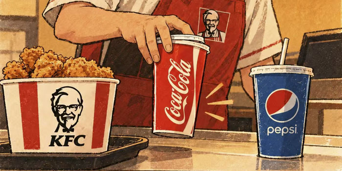

07 - 肯德基和百事可乐“分手”了
KFC and Pepsi “Break Up”

2026年10月15日，肯德基美国公司宣布，将结束与百事可乐大约40年的合作，从2027年1月开始，把美国大约3700家快餐店的百事可乐饮料换为可口可乐。不少人在讨论这件发生在快餐市场上的大事。和百事可乐合作了这么多年，为什么肯德基要换呢？
有人认为，这是因为肯德基在美国的业务不太顺利。2015年，KFC在美国鸡肉快餐市场中做得很好，占市场的20% ，但到了2025年，虽然它的市场销售增加了，但它在国内的市场只占8%，KFC的业务不断地受到新竞争者的挑战。这次KFC选择可口可乐，是因为KFC想通过更强大的可口可乐，帮助自己开发一些新的饮品和新套餐，吸引更多的年轻的消费者。简单地说，肯德基最近不和百事可乐合作，不是因为百事可乐不好，而是肯德基希望让可口可乐帮助它发展市场。
也有人认为，从管理上看，近年来可口可乐公司真的是“赢”了百事可乐。可口可乐把装瓶、运输和仓库这些事情分出来，交给其它公司管理，而总部只专心做品牌和市场。这是可口可乐成功的重要原因。